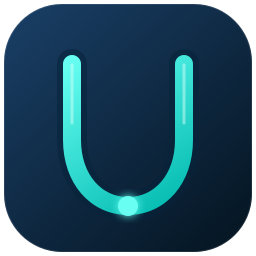
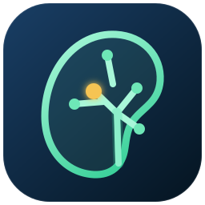
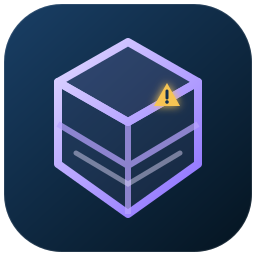
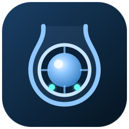
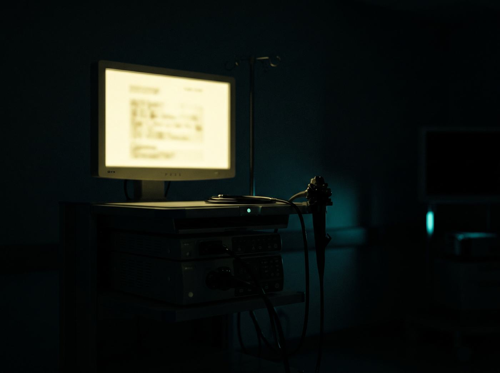
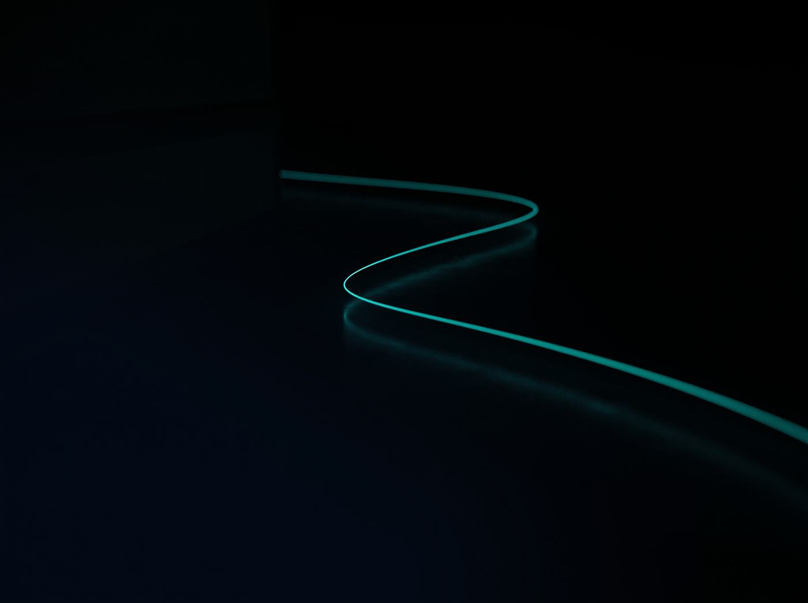

Procedures
Consent risks, operative steps, post-op orders, ward round checklists.
The urology reference I wanted in my pocket at 2am.
* Combined App Store and Google Play download total as of August 2026. Downloads do not represent verified unique users, active users or trainee status. The core reference works offline; leaflet downloads and Ariadne need a connection.
Consent risks, operative steps, post-op orders, ward round checklists.
Haematuria, retention, torsion, priapism, penile fracture, paraphimosis, catheter trouble.
Doses, antibiotic protocols, renal adjustment, interaction flags.
IDENTIFY, MIMIC, TWIST, eGFR, CPG, prostate volume.
Presentation frameworks, investigation pathways, referral guidance.
31 leaflets, handed over by QR code at the bedside.
A reference aid for clinicians in training. It does not replace local guidelines, senior review or your own judgement.
Six of them so far. Each one started as something that took too long.

Smarter on-call. Better decisions.
Pathways, procedures, doses and calculators in one place. The core works with no signal.
From MRI to 3D understanding.
A public-research-data teaching prototype that connects MRI slices, sector anatomy, mental rotation and browser-based 3D exploration.
Teaching only. Not for diagnosis, PI-RADS assignment, biopsy planning or navigation.
Visit prostateview.com ↗
See every calyx. Plan every step.
A de-identified, CT-derived teaching prototype for talking through collecting-system orientation, with a simulated scope route and calyceal search.
Not for diagnosis, treatment selection, patient-specific surgical planning or intra-operative guidance.
Visit calyxview.com ↗
Learn the operation, not just the steps.
A browser-based operative and complications atlas using stylised 3D scenes, danger zones and active recall, built for rehearsal before a viva or a supervised procedure.
Schematic anatomy for teaching only. Review status varies by item and remains visible in the project.
Visit uroops3d.com ↗
Recognise the view. Rehearse the scope.
Browser-based exercises for spatial bladder and cystoscopy practice, using schematic teaching meshes rather than patient imaging.
No patient imaging or data. Simplified teaching pathways do not replace current guidance or local policy.
Open Cystosight ↗
The view, before you are in it
Optional · online · off by defaultA thread through the pathway.
The optional online assistant inside UroRef. Off by default, and it answers from the same references the rest of the app uses.

I built the thing I wanted in my pocket, then kept building.
Clinics, lists, nights, on-calls, and the hundreds of small decisions that sit between them. The tools came out of the gaps.
Read the longer story →A quick route back into the latest UroRef deep dives.
Free · No account required for the core